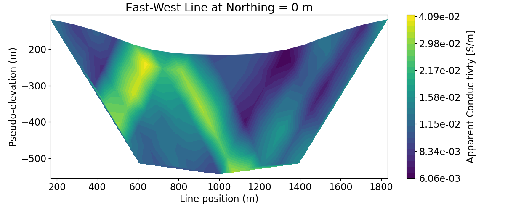
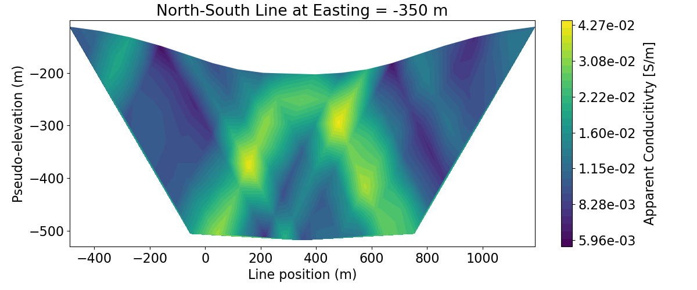
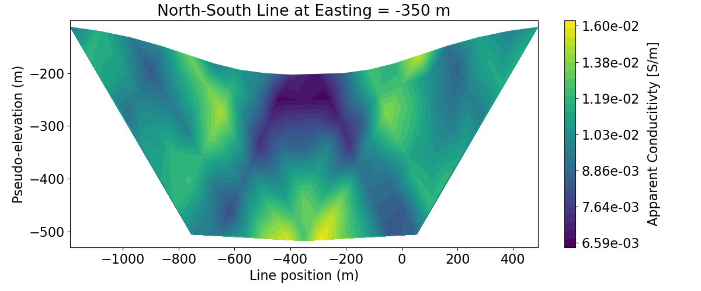

Note
Go to the end to download the full example code
Convert 3D DC/IP Data to 2D Lines#
3D DC/IP surveys are frequently comprised of a set of 2D survey lines. In this case, the 3D survey can be parsed into a list of 2D surveys; which can be imaged or inverted independently. In this tutorial, we focus on the following:
Loading and plotting the distribution of 3D DC/IP data using a 3D pseudo-section
Parsing the 3D survey geometry and associated data to a set a 2D surveys
Plotting data for each 2D survey on a 2D pseudo-section
Including survey topography when plotting pseudo-sections
In this case, the survey consists of dipole-dipole data for three East-West lines and two North-South lines.
Import modules#
from SimPEG import utils
from SimPEG.utils.io_utils.io_utils_electromagnetics import read_dcip_xyz
from SimPEG.electromagnetics.static.utils.static_utils import (
apparent_resistivity_from_voltage,
convert_survey_3d_to_2d_lines,
plot_pseudosection,
)
import os
import numpy as np
import matplotlib as mpl
import matplotlib.pyplot as plt
import tarfile
mpl.rcParams.update({"font.size": 16})
try:
import plotly
from SimPEG.electromagnetics.static.utils.static_utils import plot_3d_pseudosection
has_plotly = True
except ImportError:
has_plotly = False
pass
# sphinx_gallery_thumbnail_number = 3
Download Assets#
Here we provide the file paths to assets we need to run the inversion. The path to the true model conductivity and chargeability models are also provided for comparison with the inversion results. These files are stored as a tar-file on our google cloud bucket: “https://storage.googleapis.com/simpeg/doc-assets/dcr3d.tar.gz”
# storage bucket where we have the data
data_source = "https://storage.googleapis.com/simpeg/doc-assets/dcr3d.tar.gz"
# download the data
downloaded_data = utils.download(data_source, overwrite=True)
# unzip the tarfile
tar = tarfile.open(downloaded_data, "r")
tar.extractall()
tar.close()
# path to the directory containing our data
dir_path = downloaded_data.split(".")[0] + os.path.sep
# files to work with
topo_filename = dir_path + "topo_xyz.txt"
data_filename = dir_path + "dc_data.xyz"
Downloading https://storage.googleapis.com/simpeg/doc-assets/dcr3d.tar.gz
saved to: /home/vsts/work/1/s/tutorials/05-dcr/dcr3d.tar.gz
Download completed!
Load the Data#
Here we load the file needed to run the tutorial. In this case, we load the surface topography and an XYZ formatted data file containing 3D DC resistivity data.
# Load 3D topography
topo_xyz = np.loadtxt(str(topo_filename))
# Load 3D data. Here, the data are loaded from an XYZ formatted data file.
# The user must supply the proper headers for the function to identify the
# correct column. Using the 'dict_headers' keyword argument, we can load and
# organize additional columns in the data file as a dictionary.
data_3d, out_dict = read_dcip_xyz(
data_filename,
"volt",
a_headers=["XA", "YA", "ZA"],
b_headers=["XB", "YB", "ZB"],
m_headers=["XM", "YM", "ZM"],
n_headers=["XN", "YN", "ZN"],
data_header="V/A",
uncertainties_header="UNCERT",
dict_headers=["LINEID"],
)
Plot 3D Pseudosection#
Here we demonstrate how 3D DC resistivity data can be represented on a 3D pseudosection plot. To use this utility, you must have Python’s plotly package. Here, we represent the data as apparent conductivities.
# Extract 3D survey and observed data
survey_3d = data_3d.survey
dobs_3d = data_3d.dobs
# Convert predicted data to apparent conductivities
apparent_conductivity_3d = 1 / apparent_resistivity_from_voltage(
survey_3d, dobs_3d, space_type="half space"
)
if has_plotly:
fig = plot_3d_pseudosection(
survey_3d,
apparent_conductivity_3d,
scale="log",
units="S/m",
)
fig.update_layout(
title_text="Apparent Conductivity",
title_x=0.5,
title_font_size=24,
width=650,
height=500,
scene_camera=dict(
center=dict(x=0, y=0, z=-0.4), eye=dict(x=1.6, y=-1.6, z=1.8)
),
)
plotly.io.show(fig)
else:
print("INSTALL 'PLOTLY' TO VISUALIZE 3D PSEUDOSECTIONS")
Convert From 3D to 2D#
Here, we convert the 3D survey into a list of 2D surveys. A vector containing a line ID for each datum is required. By setting ‘output_indexing’ to True, we output a list containing the indices to extract the data for each 2D survey from vectors associated with the 3D survey.
# Extract line ID from dictionary
lineID = out_dict["LINEID"]
# Convert 3D survey to a list of 3D surveys
survey_2d_list, index_list = convert_survey_3d_to_2d_lines(
survey_3d, lineID, data_type="volt", output_indexing=True
)
# Create list of 2D apparent conductivities. Note that if you converted observed
# data then computed apparent conductivities, you would be doing so assuming 2D
# survey geometry and the values would not match those on the 3D pseudosection plot.
dobs_2d_list = []
apparent_conductivities_2d = []
for ind in index_list:
dobs_2d_list.append(dobs_3d[ind])
apparent_conductivities_2d.append(apparent_conductivity_3d[ind])
Plot 2D Pseudosections#
title_str = [
"East-West Line at Northing = 0 m",
"North-South Line at Easting = -350 m",
"North-South Line at Easting = -350 m",
]
# Plot apparent conductivity pseudo-section
for ii in range(len(survey_2d_list)):
vlim = [apparent_conductivity_3d.min(), apparent_conductivity_3d.max()]
fig = plt.figure(figsize=(12, 5))
ax1 = fig.add_axes([0.1, 0.15, 0.75, 0.78])
plot_pseudosection(
survey_2d_list[ii],
dobs=apparent_conductivities_2d[ii],
plot_type="contourf",
ax=ax1,
vlim=vlim,
scale="log",
cbar_label="Apparent Conducitivty [S/m]",
mask_topography=True,
contourf_opts={"levels": 30, "cmap": mpl.cm.viridis},
)
ax1.set_title(title_str[ii])
plt.show()
- 
- 
- 
/home/vsts/work/1/s/tutorials/05-dcr/plot_gen_3_3d_to_2d.py:200: UserWarning:
plot_pseudosection unused kwargs: ['vlim']
Total running time of the script: (0 minutes 4.540 seconds)
Estimated memory usage: 8 MB